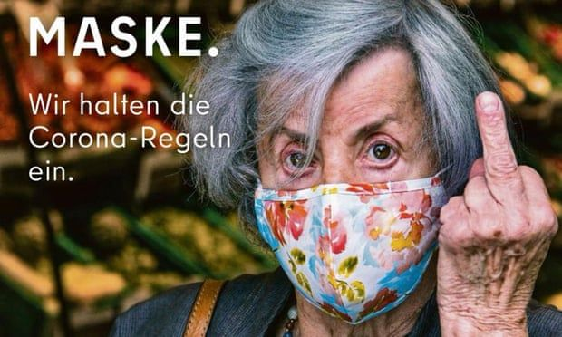

Current Affairs
Poster Iklan COVID-19 di Berlin: Nenek Acungkan Jari Tengah untuk Kaum Anti-masker
Ramadhan, 15 Oktober 2020
Badan pariwisata ibu kota Jerman, Berlin, membuat sebuah poster iklan terkait COVID-19 yang kontroversial. Di dalam foto, seorang perempuan lanjut usia yang mengenakan masker bermotif bunga mengacungkan jari tengahnya kepada mereka yang anti-masker. Visual kampanye frontal ini pun menuai sorotan dan kritikan.
Berlin tampaknya tak ingin bersikap sopan dalam memperingatkan masyarakat untuk taat protokol kesehatan, terutama bagi mereka yang tak memakai masker. Dari poster iklan yang menampilkan seorang nenek tersebut, terbaca jelas sebuah tulisan yang berisi pesan: “Jari terangkat untuk semua orang yang tidak memakai masker."
Iklan berjudul "Kami mematuhi protokol kesehatan pencegahan virus Corona” diluncurkan Visit Berlin dan Senat Berlin pada Selasa (12/10) lalu di surat kabar lokal. Adapun poster iklan kampanye tersebut bertujuan untuk menekan penyebaran lebih lanjut dari COVID-19 dan untuk menyoroti pentingnya menjaga kesehatan para lansia—kaum yang paling rentan tertular.
Juru bicara Visit Berlin, Christian Tänzler, mengatakan iklan tersebut berusaha untuk memainkan selera humor khas Berlin yang unik dan satir. Kalimat dalam iklan menyiratkan kata "menunjuk dengan jari" saat wanita itu sebenarnya terlihat mengangkat jari tengahnya.
Tänzler mengatakan poster tersebut dibuat untuk mengingatkan orang agar mengikuti aturan di kota. "Sebagian besar warga Berlin dan tamu kami menghormati dan mengikuti aturan corona, tetapi beberapa tidak. Orang-orang ini membahayakan nyawa orang yang lebih tua dan kelompok berisiko," kata Tänzler kepada BBC.
"Kami ingin memberi perhatian pada masalah ini. Untuk itulah kami memilih motif yang provokatif ini. Iklan tersebut memiliki corak khas Berlin," ucapnya.
Tänzler menjelaskan bahwa warga Berlin memang sangat terkenal dengan gaya komunikasi yang frontal, sembari menambahkan bahwa banyak orang Inggris akan menghargai humor tersebut. "Kami menggunakan berkomunikasi secara jelas dengan orang-orang yang tidak menghormati aturan." ujar Tänzler.
Beberapa orang justru bingung lantaran teks dalam poster iklan tersebut mengatakan "jari telunjuk" ketika si wanita tua dalam poster mengangkat jari tengahnya. Visit Berlin mengatakan kontradiksi itu disengaja.
Banyak juga yang mengecam iklan tersebut karena beberapa orang tidak boleh memakai masker karena alasan kesehatan. "Kelompok sasaran kami adalah orang-orang yang tidak menghormati kehidupan orang lain," kata Tänzler.
"Kalau ada orang yang merasa diserang secara pribadi karena tidak bisa memakai masker, itu bukan tujuan kami. Saya minta maaf untuk itu," ujarnya.
Sayangnya, kampanye tersebut justru dianggap belum sesuai selera semua orang. Lorenz Maroldt, pemimpin redaksi surat kabar Berlin Der Tagesspiegel, jadi salah satu yang kurang sepakat dengan isi dari poster iklan tersebut.
"Saya pikir iklan itu dengan cara 'klasik Berlin' akan berhasil dengan baik tanpa politik corona yang disfungsional dari Senat," kata Lorenz. "Senat tampaknya berpikir bahwa menghina orang lebih berhasil daripada membuat aturan yang tegas dan jelas dengan kontrol yang efisien. Mereka gagal." ujarnya.
Mit dem Durchsetzen der Corona-Verordnungen hat es irgendwie nicht so richtig funktioniert in Berlin. Also versucht es der Senat mal mit Publikumsbeschimpfung. pic.twitter.com/MrW6krPGya
— Lorenz Maroldt (@LorenzMaroldt) October 12, 2020
Selain itu, kritikan juga datang dari politikus. Seperti dikutip dari DW, anggota senat Berlin, Marcel Luthe, mengatakan ia telah membuat pengaduan resmi kepada polisi tentang iklan tersebut, dengan mengatakan hal itu memicu kebencian terhadap orang-orang yang tidak bisa memakai masker, seperti anak kecil atau orang yang menderita komplikasi kesehatan.


PT Muda Mudi Berkarya Sejahtera Wisma 46, lantai 45 Jl. Jend. Sudirman Kav.1, Jakarta Pusat 10220, Indonesia (+6221) 7182706 redaksi@asumsi.co